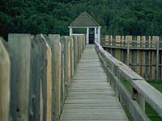

|
|
"Environmentally Sensitive Area". Please be careful where you walk and try not to disturb the natural environment. For additional information please contact Tourism Saskatchewan. | ||
| Fort Carlton | |||
| GPS: | 52d 52.21m N | 106d 31.68m W | 1358 feet |
| Location: | Fort Carlton is 16 kms. southwest of the town of Carlton. | ||
From Duck Lake, it's a pleasant 26 kilometre (16 mile) drive to Fort Carlton. Your first stop here should be the visitor centre with displays outlining Fort Carlton's role in the fur trade. The impressive building is a reconstruction of the house built in 1879 for Chief Factor Lawrence Clarke and his family. | |||
Fort Carlton was built by the Hudson's Bay Company in 1810. It was situated on a valley floor at a natural fiord in the North Saskatchewan River. The fort remained an important post for 75 years, as it was located near a major waterway, and the west's most important overland route, the Carlton Trail, which linked Lower Fort Garry (Winnipeg) and Fort Edmonton. | |||

Fort Carlton's main role in the early years was as a trading post and supplier of provisions to boat brigades and other posts in the Hudson's Bay Company network. The fort obtained pemmican, dried meat, pounded meat, and grease from the Indians, as well as furs and hides. In exchange, the Indians and other traders received guns, tobacco, cloth, blankets, beads, and metal goods such as cooking utensils, axes, knives, and traps. | |||
As York boats, Red River carts, and steamships were introduced to the west, Fort Carlton continued to be a major distribution centre. The fort also provided supplies for the settlers who began moving into the region in the 1870's. | |||

Mounted Police officers were dispatched to Fort Carlton as treaty negotiations were held with the Cree. Treaty No. 6, whereby the Cree gave up their claims to 120,000 square miles of land, was signed at Fort Carlton and at Fort Pitt. | |||
In 1884 and 1885, as the Metis began organizing under Louis Riel, NWMP officers were again sent to Fort Carlton. Superintendent Crozier, who was in command at Battleford, arrived at the fort in mid March, 1885, and was later reinforced by over 40 civilian volunteers from Prince Albert. | |||
 Crozier's forces met those of Riel in the first battle of the Northwest Rebellion on March 26, not far from the village of Duck Lake. Outnumbered and in the open, the police and volunteers suffered heavy casualties and withdrew to the fort. As Fort Carlton could not realistically be defended, the decision was made to abandon the post and move to Prince Albert. In the hastily arranged evacuation, fire broke out in quarters near the main gate and much of the fort was destroyed. | |||
Fort Carlton was never rebuilt by the Hudson's Bay Company. In the mid-1960's, archaeological excavations were conducted and the fort was partially reconstructed on its original location. It is now a provincial historic park. | |||
You enter the fort by walking through the gates of the high stockade. Four buildings have been reconstructed, with the foundations of others outlined in concrete. In the fur and provisions store, you can pick up different animal pelts for a close look, and learn how trading was conducted. The trade shop at the far end of the fort contains merchandise that would have interested traders. Another log building shows typical quarters of the company clerk. A shop where sails for York boats and harnesses for carts and sleds would have been repaired is being planned for the smallest building. | |||
Just outside the stockade stand three Tipis, representing the 200-300 that would have been there during the fort's heyday. An interpreter guides you through the many displays, explaining the common trade goods such as cloth, beads, Hudson's Bay blankets, knives or cast iron pots, as well as items that were made and used by the Plains Cree. | |||
You learn how pemmican was made, how baskets were made from birchbark or rawhide, how stone hammers were used to crush bones or berries, and the spiritual significance of sweetgrass and the pipe. See the ceremonial head dresses, the collection of elaborate women's outfits that were used for special occasions such as weddings, and the men's breastplate made from numerous bird bones that is so strong that it could be used as protective armour in battle. | |||
The River Walk is a short trail from the fort to the riverbank, where the fur traders docked their boats and hauled goods and provisions. The longer Carlton Trail Walk starts in the campground and circle through the woods and hills. The top of the hill near the end of the trail offers spectacular views of the river valley and the fort. | |||
If you had been standing here during the 1860s, 70s or 80s, you would have been situated almost midway on the most important overland trade and transportation route in the Canadian North West: the Carlton Trail. You would have seen Red River Cart brigades driven by Metis freighters meandering along the trail with supplies bound for Fort Carlton, Fort Pitt, or Fort Edmonton. You might have encountered Metis families moving west, disillusioned with political developments in Manitoba or incoming settlers from eastern Canada hoping to homestead successfully in the newly-established North-West Territories. The Carlton Trail, established by Metis hunters and traders and Hudson's Bay Company employees, led across the prairies and parklands of western Canada from Fort Garry (Winnipeg) to Fort Edmonton more than 1440 kilometres (900 miles) away. | |||
Fort Garry is the start of the trail. Fort Garry was one of the major H.B.C. posts in Rupert's Land (North-West Territories) and the centre of government for the Red River Settlement and District of Assiniboia. By the 1860s steamboats brought supplies up the Red River from St. Paul, Minnesota to the Fort where they were unloaded and repacked for shipment northward by boat on Lake Winnipeg or westward on carts along the Carlton Trail. Red River had a large Metis population who actively bid for the Company contracts to carry freight along the trail. | |||
Fort Ellice, at one time a lucrative fur trading post, later derived its importance as a provisioning post along the Carlton Trail. | |||
Batoche provided one of several ferry services for crossing the South Saskatchewan River. Xavier Letendre dit Batoche established a store and ferry service on the east bank in 1872. The ferry service grew rapidly into a thriving little village, commercial centre for the Metis settlement called St. Laurent. | |||
Fort Pitt was located where the territories of the Cree, Assiniboine, and Blackfoot converged. The three tribes frequently skirmished in the area around the trading post and on one occasion the Blackfoot actually attacked the fort. Later, during the North West Rebellion, Big Bear's Cree forced the N.W.M.P. to abandon the post, taking the remaining civilians prisoner and setting fire to the fort buildings. | |||
Fort Edmonton was the end of the trail. For almost three quarters of the 19th century Fort Edmonton was the centre for all trappers, traders, missionaries and adventurers travelling to the far reaches of the North Saskatchewan River. The fort was noted for the construction of York boats and for providing garden vegetables, potatoes, wheat, white fish, buffalo meat and pemmican to the posts in the upper Saskatchewan and Athabasca districts. | |||